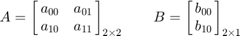
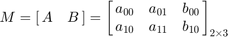
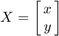
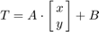
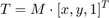
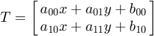
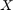
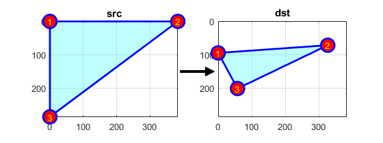
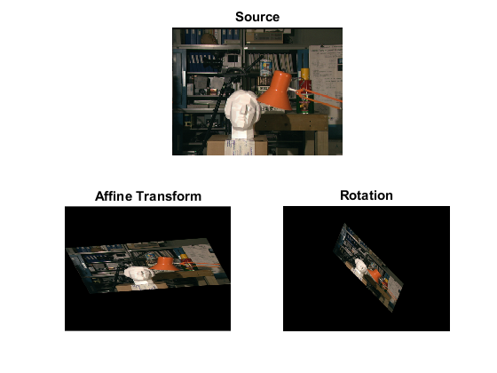

Image Affine Transformation
In this demo, we show how to:
- Use the OpenCV function cv.warpAffine to implement simple remapping routines
- Use the OpenCV function cv.getRotationMatrix2D to obtain a 2x3 rotation matrix
Sources:
Contents
Theory
An affine transformation is any transformation that can be expressed in the form of a matrix multiplication (linear transformation) followed by a vector addition (translation).
From the above, we can use an affine transformation to express:
- Rotations (linear transformation)
- Translations (vector addition)
- Scale operations (linear transformation)
you can see that, in essence, an affine transformation represents a relation between two images.
The usual way to represent an affine transformation is by using a 2x3 matrix.


Considering that we want to transform a 2D vector  by using  and
and  , we can do the same with:
, we can do the same with:

or


How do we get an Affine Transformation?
We mentioned that an affine transformation is basically a relation between two images. The information about this relation can come, roughly, in two ways:
- We know both  and T and we also know that they are related. Then our task is to find
- We know and . To obtain we only need to apply . Our information for may be explicit (i.e. have the 2-by-3 matrix) or it can come as a geometric relation between points.
Let's explain the second point in a better way. Since relates two images, we can analyze the simplest case in which it relates three points in both images. Look at the figure below:

the points 1, 2 and 3 (forming a triangle in image 1) are mapped into image 2, still forming a triangle, but now they have changed notoriously. If we find the affine transformation with these 3 points (you can choose them as you like), then we can apply this found relation to all the pixels in an image.
Code
This program:
- Loads an image
- Applies an affine Transform to the image. This Transform is obtained from the relation between three points. We use the function cv.warpAffine for that purpose.
- Applies a Rotation to the image after being transformed. This rotation is with respect to the image center
- Waits until the user exits the program
load input image
src = cv.imread(fullfile(mexopencv.root(), 'test', 'tsukuba.png'), 'Color',true);
Affine Transform: we need two sets of 3 points to derive the relation
[rows,cols,~] = size(src);
src_tri = [0.0 0.0; cols - 1.0, 0; 0, rows - 1.0];
dst_tri = [cols*0.0, rows*0.33; cols*0.85, rows*0.25; cols*0.15, rows*0.7];
warp_mat = cv.getAffineTransform(src_tri, dst_tri);
display(warp_mat) % 2x3 affine transform matrixwarp_mat =
0.8522 0.2007 0
-0.0602 0.3713 95.0400
Draw these points to get a better idea on how they change. Their locations are approximately the same as the ones depicted in the Theory section. You may note that the size and orientation of the triangle defined by the 3 points change.
t = {num2str((1:3)'), 'Color','y', ...
'VerticalAlignment','middle', 'HorizontalAlignment','center'};
p = {'c', 'FaceAlpha',0.25, 'EdgeColor','b', 'LineWidth',2, ...
'Marker','o', 'MarkerSize',15, 'MarkerFaceColor','r'};
pos = get(0, 'DefaultFigurePosition');
figure('Position',pos.*[1 1 1 0.5])
annotation('arrow',[0.47 0.56], [0.5 0.5], 'LineWidth',3, 'HeadStyle','plain')
subplot(121)
patch(src_tri(:,1), src_tri(:,2), p{:})
text(src_tri(:,1), src_tri(:,2), t{:})
title('src'), axis ij image, axis([1 cols 1 rows]-1), grid on, box on
subplot(122)
patch(dst_tri(:,1), dst_tri(:,2), p{:})
text(dst_tri(:,1), dst_tri(:,2), t{:})
title('dst'), axis ij image, axis([1 cols 1 rows]-1), grid on, box onapply the affine transform to the source image
warp_dst = cv.warpAffine(src, warp_mat);
Rotate: we need the center with respect to which the image will rotate, the angle to be rotated, and an optional scale factor
center = [size(warp_dst,2) size(warp_dst,1)] / 2; ang = -50.0; % In OpenCV a positive angle is counter-clockwise scale = 0.6; rot_mat = cv.getRotationMatrix2D(center, ang, scale); display(rot_mat) % 2x3 rotation matrix
rot_mat =
0.3857 -0.4596 184.1371
0.4596 0.3857 0.2148
apply the rotation to the output of our previous transformation
warp_rotate_dst = cv.warpAffine(warp_dst, rot_mat);
show results
figure subplot(211), imshow(src), title('Source') subplot(223), imshow(warp_dst), title('Affine Transform') subplot(224), imshow(warp_rotate_dst), title('Rotation')